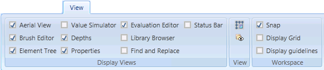
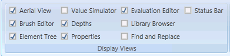
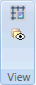
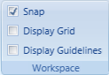

View Tab
The View tab allows you to make selections that determine which views to display, and how the grid and guidelines are displayed on the canvas, as well as how to display units, and layers in the active graphic.

The View tab contains the following groups:
Display Views
The Display Views group option allows you to select which views to display or hide in the dock panel.

Display Views Group | |
Name | Description |
Aerial View | Show or remove the Aerial view from the workspace. |
Brush Editor | Show or remove the Brush Editor from the workspace. |
Element Tree | Show or remove the Element Tree view from the workspace. |
Value Simulator | Show or remove the Value Simulator view from the workspace. |
Depths | Show or remove the Depths view from the workspace. |
Properties | Show or remove the Property view from the workspace. |
Evaluation Editor | Show or remove the Evaluation Editor from the workspace. |
Library Browser | Show or remove the Library Browser from the workspace. |
Find and Replace | Show or remove the Find and Replace view from the workspace. |
Status Bar | Show or remove the Status bar at the bottom of the workspace. |
View
The View group options allow you to view logical or physical units of properties placed on the canvas, enable layer visibility range, so that if you zoom in or out, the visible layers will depend on the current zoom factor.

View Group | ||
Icon | Name | Description |
Show Logical Units | Toggle between displaying the logical or physical units of a property | |
Disable Layer Visibility Range | Toggle between enabling and disabling the layer visibility range in the active graphic. | |
Workspace
The Workspace group options allow you to hide or display grids and guidelines, as well as attach graphic elements to guidelines.

Workspace Group | |
Name | Description |
Snap | Attach elements to the nearest guideline to make it easier to create an accurate graphic. Enabled by default. Snap and Editing Elements With Snap enabled, an element can be moved by a set number of increments. This is configurable in the Graphic properties, in the Workspace section: Pitch X and Pitch Y. These properties allow you to adjust the distance between the gridlines. When Snap is disabled, you can move the elements pixel-by-pixel instead. This is useful when adjusting Pipe elements, for example. |
Display Grid | Display or hide a pattern of equally spaced horizontal and vertical lines on a graphic to help you align elements symmetrically and precisely. |
Display Guidelines | Display or hide horizontal or vertical guidelines lines dragged onto a graphic to help you align elements symmetrically and precisely. |
Related Topics
- View Group
For background information, see Graphic Properties.
- Workspace Group
For background information, see the following:
Workspace Properties.
For related procedures, see the following:
Setting Guidelines on a Graphic.